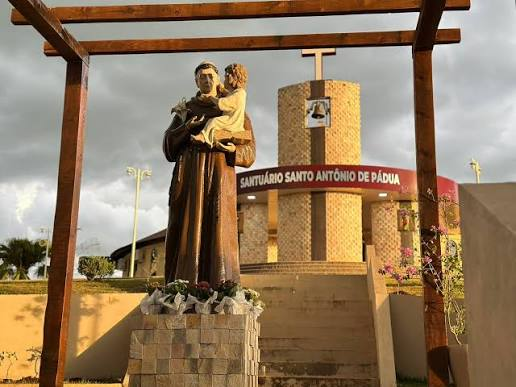
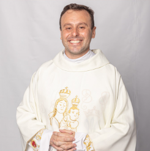

Eventos e Festas
Acompanhe a agenda de festas, retiros, acampamentos e celebrações especiais do Santuário Santo Antônio de Pádua. Clique em qualquer card para ver a programação completa, datas, inscrições e fotos dos eventos.

Festa de Santo Antônio
A maior celebração do nosso Santuário, com trezena, procissão, almoço festivo e quermesse.
Ver detalhes →
Retiro Espiritual da Família
Um final de semana de oração, momentos de deserto, pregações e restauração espiritual.
Ver detalhes →
Acampamento Juvenil
Uma experiência transformadora de fé, desafios e amizade para todos os jovens.
Ver detalhes →